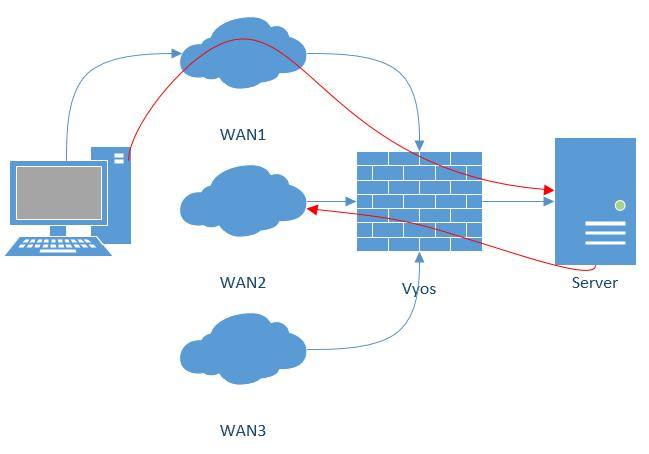

WAN load balancing
Outbound traffic can be balanced between two or more outbound interfaces. If a path fails, traffic is balanced across the remaining healthy paths, a recovered path is automatically added back to the routing table and used by the load balancer. The load balancer automatically adds routes for each path to the routing table and balances traffic across the configured interfaces, determined by interface health and weight.
In a minimal configuration, the following must be provided:
an interface with a nexthop
one rule with a LAN (inbound-interface) and the WAN (interface).
Let’s assume we have two DHCP WAN interfaces and one LAN (eth2):
set load-balancing wan interface-health eth0 nexthop 'dhcp'
set load-balancing wan interface-health eth1 nexthop 'dhcp'
set load-balancing wan rule 1 inbound-interface 'eth2'
set load-balancing wan rule 1 interface eth0
set load-balancing wan rule 1 interface eth1
Note
WAN Load Balacing should not be used when dynamic routing protocol is used/needed. This feature creates customized routing tables and firewall rules, that makes it incompatible to use with routing protocols.
Balancing Rules
Interfaces, their weight and the type of traffic to be balanced are defined in numbered balancing rule sets. The rule sets are executed in numerical order against outgoing packets. In case of a match the packet is sent through an interface specified in the matching rule. If a packet doesn’t match any rule it is sent by using the system routing table. Rule numbers can’t be changed.
Create a load balancing rule, it can be a number between 1 and 9999:
vyos@vyos# set load-balancing wan rule 1
Possible completions:
description Description for this rule
> destination Destination
exclude Exclude packets matching this rule from wan load balance
failover Enable failover for packets matching this rule from wan load balance
inbound-interface Inbound interface name (e.g., "eth0") [REQUIRED]
+> interface Interface name [REQUIRED]
> limit Enable packet limit for this rule
per-packet-balancing Option to match traffic per-packet instead of the default, per-flow
protocol Protocol to match
> source Source information
Interface weight
Let’s expand the example from above and add weight to the interfaces. The bandwidth from eth0 is larger than eth1. Per default, outbound traffic is distributed randomly across available interfaces. Weights can be assigned to interfaces to influence the balancing.
set load-balancing wan rule 1 interface eth0 weight 2
set load-balancing wan rule 1 interface eth1 weight 1
66% of traffic is routed to eth0, eth1 gets 33% of traffic.
Rate limit
A packet rate limit can be set for a rule to apply the rule to traffic above or below a specified threshold. To configure the rate limiting use:
set load-balancing wan rule <rule> limit <parameter>
burst: Number of packets allowed to overshoot the limit withinperiod. Default 5.period: Time window for rate calculation. Possible values:second(one second),minute(one minute),hour(one hour). Default issecond.rate: Number of packets. Default 5.threshold:beloworabovethe specified rate limit.
Flow and packet-based balancing
Outgoing traffic is balanced in a flow-based manner. A connection tracking table is used to track flows by their source address, destination address and port. Each flow is assigned to an interface according to the defined balancing rules and subsequent packets are sent through the same interface. This has the advantage that packets always arrive in order if links with different speeds are in use.
Packet-based balancing can lead to a better balance across interfaces when out of order packets are no issue. Per-packet-based balancing can be set for a balancing rule with:
set load-balancing wan rule <rule> per-packet-balancing
Exclude traffic
To exclude traffic from load balancing, traffic matching an exclude rule is not balanced but routed through the system routing table instead:
set load-balancing wan rule <rule> exclude
Health checks
The health of interfaces and paths assigned to the load balancer is periodically checked by sending ICMP packets (ping) to remote destinations, a TTL test or the execution of a user defined script. If an interface fails the health check it is removed from the load balancer’s pool of interfaces. To enable health checking for an interface:
vyos@vyos# set load-balancing wan interface-health <interface>
Possible completions:
failure-count Failure count
nexthop Outbound interface nexthop address. Can be 'dhcp or ip address' [REQUIRED]
success-count Success count
+> test Rule number
Specify nexthop on the path to the destination, ipv4-address can be set to
dhcp
set load-balancing wan interface-health <interface> nexthop <ipv4-address>
Set the number of health check failures before an interface is marked as unavailable, range for number is 1 to 10, default 1. Or set the number of successful health checks before an interface is added back to the interface pool, range for number is 1 to 10, default 1.
set load-balancing wan interface-health <interface> failure-count <number>
set load-balancing wan interface-health <interface> success-count <number>
Each health check is configured in its own test, tests are numbered and processed in numeric order. For multi target health checking multiple tests can be defined:
vyos@vyos# set load-balancing wan interface-health eth1 test 0
Possible completions:
resp-time Ping response time (seconds)
target Health target address
test-script Path to user defined script
ttl-limit Ttl limit (hop count)
type WLB test type
resp-time: the maximum response time for ping in seconds. Range 1…30, default 5target: the target to be sent ICMP packets to, address can be an IPv4 address or hostnametest-script: A user defined script must return 0 to be considered successful and non-zero to fail. Scripts are located in /config/scripts, for different locations the full path needs to be providedttl-limit: For the UDP TTL limit test the hop count limit must be specified. The limit must be shorter than the path length, an ICMP time expired message is needed to be returned for a successful test. default 1type: Specify the type of test. type can be ping, ttl or a user defined script
Source NAT rules
Per default, interfaces used in a load balancing pool replace the source IP of each outgoing packet with its own address to ensure that replies arrive on the same interface. This works through automatically generated source NAT (SNAT) rules, these rules are only applied to balanced traffic. In cases where this behaviour is not desired, the automatic generation of SNAT rules can be disabled:
set load-balancing wan disable-source-nat
Sticky Connections
Inbound connections to a WAN interface can be improperly handled when the reply is sent back to the client.
{kind=link}
Upon reception of an incoming packet, when a response is sent, it might be desired to ensure that it leaves from the same interface as the inbound one. This can be achieved by enabling sticky connections in the load balancing:
set load-balancing wan sticky-connections inbound
Failover
In failover mode, one interface is set to be the primary interface and other interfaces are secondary or spare. Instead of balancing traffic across all healthy interfaces, only the primary interface is used and in case of failure, a secondary interface selected from the pool of available interfaces takes over. The primary interface is selected based on its weight and health, others become secondary interfaces. Secondary interfaces to take over a failed primary interface are chosen from the load balancer’s interface pool, depending on their weight and health. Interface roles can also be selected based on rule order by including interfaces in balancing rules and ordering those rules accordingly. To put the load balancer in failover mode, create a failover rule:
set load-balancing wan rule <number> failover
Because existing sessions do not automatically fail over to a new path, the session table can be flushed on each connection state change:
set load-balancing wan flush-connections
Warning
Flushing the session table will cause other connections to fall back from flow-based to packet-based balancing until each flow is reestablished.
Script execution
A script can be run when an interface state change occurs. Scripts are run from /config/scripts, for a different location specify the full path:
set load-balancing wan hook script-name
Two environment variables are available:
WLB_INTERFACE_NAME=[interfacename]: Interface to be monitoredWLB_INTERFACE_STATE=[ACTIVE|FAILED]: Interface state
Warning
Blocking call with no timeout. System will become unresponsive if script does not return!
Handling and monitoring
Show WAN load balancer information including test types and targets. A character at the start of each line depicts the state of the test
+successful-faileda blank indicates that no test has been carried out
vyos@vyos:~$ show wan-load-balance
Interface: eth0
Status: failed
Last Status Change: Tue Jun 11 20:12:19 2019
-Test: ping Target:
Last Interface Success: 55s
Last Interface Failure: 0s
# Interface Failure(s): 5
Interface: eth1
Status: active
Last Status Change: Tue Jun 11 20:06:42 2019
+Test: ping Target:
Last Interface Success: 0s
Last Interface Failure: 6m26s
# Interface Failure(s): 0
Show connection data of load balanced traffic:
vyos@vyos:~$ show wan-load-balance connection
conntrack v1.4.2 (conntrack-tools): 3 flow entries have been shown.
Type State Src Dst Packets Bytes
tcp TIME_WAIT 10.1.1.13:38040 203.0.113.2:80 203.0.113.2 192.168.188.71
udp 10.1.1.13:41891 198.51.100.3:53 198.51.100.3 192.168.188.71
udp 10.1.1.13:55437 198.51.100.3:53 198.51.100.3 192.168.188.71
Restart
restart wan-load-balance